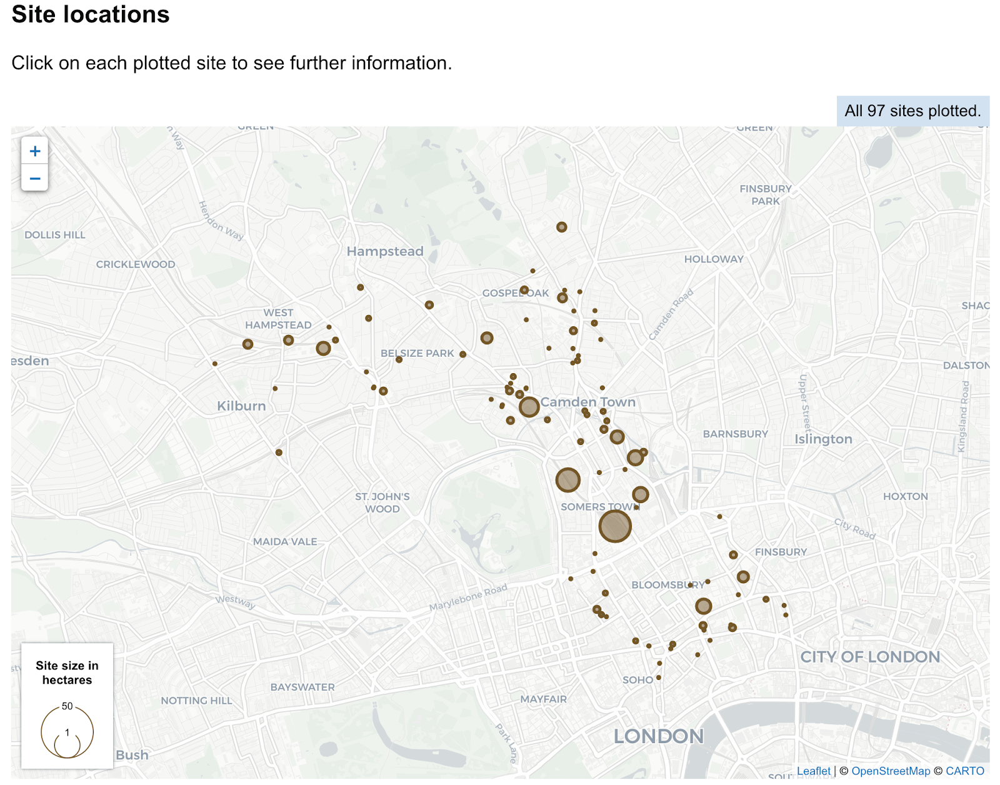

Interactive planning data map
in-progress
A mapping tool that allows us to plug in planning data. Planning data will be displayed on the map, users will be able to interactive with it and find out more of the data behind the geometries.
Why we are building this
We collect a lot of data that has a geographic element. Plotting the data on a map provides additional context to a user viewing the data.
We will have a lot of maps on the digital land site. Some maps will show a single data record, others will plot multiple datasets worth of data. A user should interact with the maps the same way.
When building a new map we want to be able to focus on the unique parts of the data and map.
Hypotheses
- showing the data that we’ve collected on a map will help demonstrate the value of making data available
- showing data that we’ve collected on a map will help potential consumers of the data understand what is available
- showing data that we’ve collected on a map will help highlight where there are gaps in the data
- showing data on a map will help users see planning data relavent to a location
What we've done so far
We have a page on the digital land website that shows a national map, currently showing the brownfield land data that we’ve collected.

At the moment the map just shows brownfield land data with a basic filter (by organisation). A user can interact with the map by clicking on the local authority boundaries. When clicked on the brownfield sites for that Local authority will be plotted. A user can click on a brownfield site to reveal the data about that site.

We have create a map component that allows us to very easily add digital land style maps to a page or service. All these maps have fullscreen and recentre buttons available to them.
Help improve this page
If you’ve got a question, idea or suggestion share it with the digital land team on github or email us on digitalland@communities.gov.uk